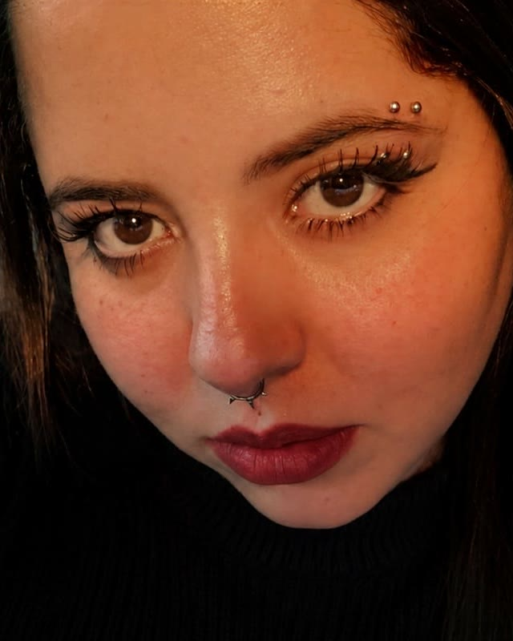

Tatuagem autoral
Você traz a ideia, a referência e o lugar do corpo. O desenho nasce daí, feito para a sua pele em vez de copiado de outra.
Tatuadora e ilustradora

Do traço delicado ao preto fechado, sem perder o detalhe.
Enquanto elas não entram aqui, o trabalho da Tay está inteiro no Instagram, inclusive os destaques Delicadas e Disponíveis.
Você traz a ideia, a referência e o lugar do corpo. O desenho nasce daí, feito para a sua pele em vez de copiado de outra.
Traço fino, linha limpa, peças pequenas que pedem mão leve. É um destaque inteiro no perfil dela.
Desenho autoral que pode virar tatuagem ou ficar no papel. A ilustração da Tay tem casa própria: @ilustra_tay.
Disponíveis
Projetos autorais já desenhados, prontos para tatuar. Cada um sai uma vez só.
A Tay publica os desenhos livres no destaque Disponíveis do perfil. Viu um que é seu? Manda no direct que ela reserva.
Referência, lugar do corpo e mais ou menos o tamanho. Print de outra tattoo serve, é só para entender a direção.
Com a ideia na mão, a Tay responde com o valor e o tempo de sessão que a peça pede.
Data confirmada, o desenho é preparado para o dia. Você aparece com a pele limpa e bem alimentada.
É por ali que tudo acontece: orçamento, agenda e os desenhos disponíveis.
A Tay fundou o OctoInk Tattoo Studio, onde atende.